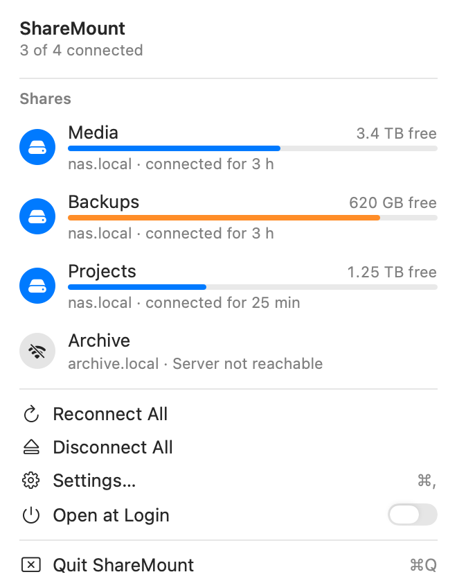
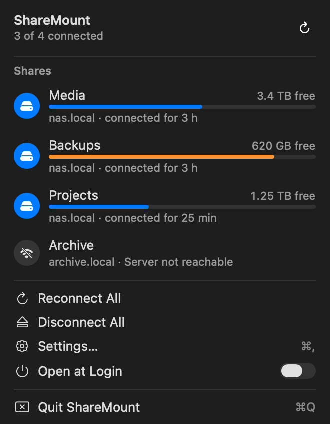
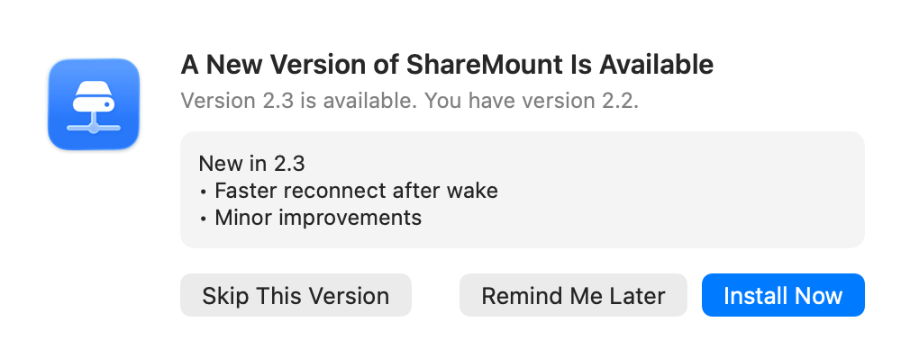
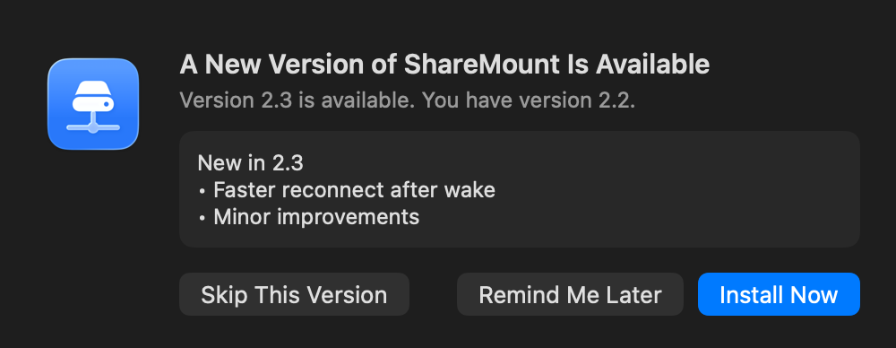
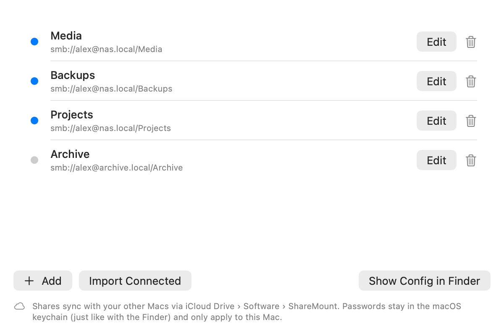
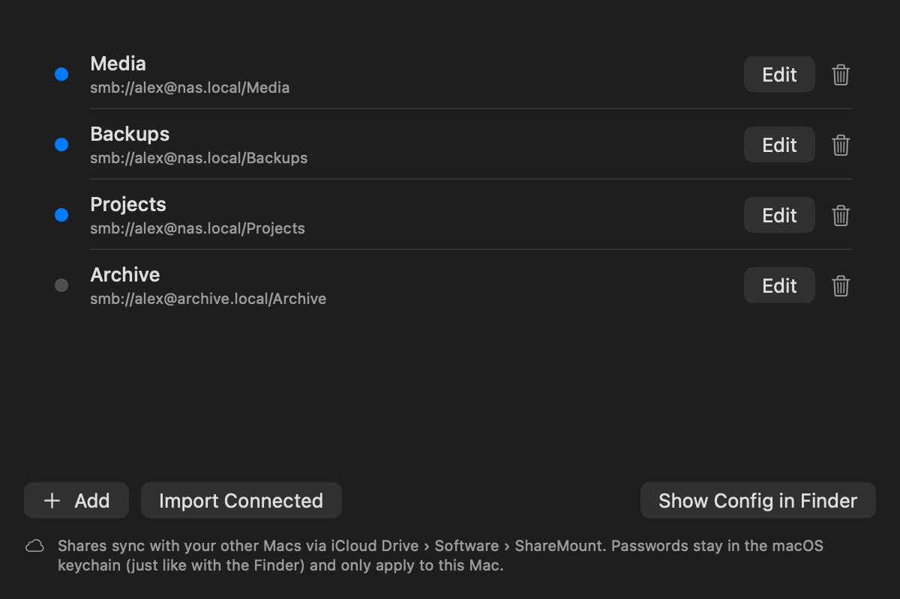

ShareMount
Your network shares, always there.Deine Netzwerkfreigaben, immer da.
A small menu bar app for the Mac that keeps SMB shares mounted and brings them back after sleep, network changes and NAS restarts.Eine kleine App für die Menüleiste des Mac. Sie hält SMB-Freigaben verbunden und holt sie nach dem Ruhezustand, nach Netzwerkwechseln und nach NAS-Neustarts zurück.




Set it up once. Forget about it.Einmal einrichten. Vergessen.
ShareMount watches your shares in the background and quietly fixes what macOS leaves broken.ShareMount behält deine Freigaben im Hintergrund im Blick und repariert still, was macOS kaputt zurücklässt.
Reconnects on its ownVerbindet sich selbst neu
After wake, Wi-Fi changes and NAS reboots. While a server is away it backs off gently, from 30 seconds up to 15 minutes.Nach dem Aufwachen, nach WLAN-Wechseln und NAS-Neustarts. Ist ein Server weg, wartet ShareMount immer etwas länger, von 30 Sekunden bis zu 15 Minuten.
No more beachballsKein Wasserball mehr
Hung mounts are detected with short timeouts and remounted, but never in the first seconds after wake.Hängende Freigaben werden mit kurzen Zeitlimits erkannt und neu verbunden, aber nie in den ersten Sekunden nach dem Aufwachen.
Uses the macOS keychainNutzt den macOS-Schlüsselbund
Connects through macOS with the password the Finder already saved. ShareMount never reads or stores a password.Verbindet über macOS mit dem Passwort, das der Finder schon gesichert hat. ShareMount liest oder speichert nie ein Passwort.
Clean pathsSaubere Pfade
Keeps shares at /Volumes/Media instead of Media-1, so scripts and backups always find them.Hält Freigaben unter /Volumes/Media statt Media-1, damit Skripte und Backups sie immer finden.
Gentle with your NASSchonend für dein NAS
A rejected password stops all automatic retries until you sign in again, so your account is never locked out.Wird ein Passwort abgelehnt, stoppen alle automatischen Versuche, bis du dich neu anmeldest. So wird dein Konto nie gesperrt.
All your MacsAlle deine Macs
With iCloud Drive, your list of shares follows you to every Mac. Passwords stay in each Mac's keychain.Mit iCloud Drive kommt deine Liste der Freigaben auf jeden Mac mit. Passwörter bleiben im Schlüsselbund des jeweiligen Mac.


Private by design.Privat von Grund auf.
No trackingKein Tracking
No analytics, no telemetry, no accounts. There is nothing to sign up for.Keine Analyse, keine Telemetrie, keine Konten. Es gibt nichts, wofür du dich registrieren musst.
Only your serversNur deine Server
ShareMount talks to your own SMB servers and, to look for updates, to GitHub. Nothing else.ShareMount spricht mit deinen eigenen SMB-Servern und, um nach Updates zu suchen, mit GitHub. Sonst mit niemandem.
No passwords storedKeine Passwörter gespeichert
Passwords stay in the macOS keychain and are only ever used by macOS itself.Passwörter bleiben im macOS-Schlüsselbund und werden nur von macOS selbst benutzt.
Plain filesEinfache Dateien
Your shares live in a readable
shares.json, the log in~/Library/Logs.Deine Freigaben stehen in einer lesbarenshares.json, das Protokoll in~/Library/Logs.
Install in a minute.In einer Minute installiert.
ShareMount is open source and signed locally, not notarized by Apple, so macOS asks once before the first launch.ShareMount ist Open Source und lokal signiert, nicht von Apple beglaubigt. Deshalb fragt macOS vor dem ersten Start einmal nach.
DownloadLaden
Get
ShareMount.zipfrom the latest release and unzip it.LadeShareMount.zipaus dem neuesten Release und entpacke es.Move to ApplicationsIn „Programme“ bewegen
Drag
ShareMount.appinto your Applications folder. Updates replace it there.ZiehShareMount.appin deinen Ordner „Programme“. Updates ersetzen sie dort.Allow the first launchErsten Start erlauben
Open it, then go to System Settings › Privacy & Security and click Open Anyway. Or in Terminal:Öffne sie, geh dann zu Systemeinstellungen › Datenschutz & Sicherheit und klicke auf „Dennoch öffnen“. Oder im Terminal:
xattr -dr com.apple.quarantine /Applications/ShareMount.appAdd your sharesFreigaben hinzufügen
Add them in Settings or adopt the ones already mounted in the Finder. Sign in once with “Remember this password in my keychain”.Füge sie in den Einstellungen hinzu oder übernimm die, die im Finder schon verbunden sind. Melde dich einmal mit „Dieses Passwort im Schlüsselbund sichern“ an.
Requires macOS 14 or later on Apple silicon. English and German interface. Prefer to build it yourself? See the README.Braucht macOS 14 oder neuer auf einem Mac mit Apple Chip. Oberfläche auf Deutsch und Englisch. Lieber selbst bauen? Siehe README.